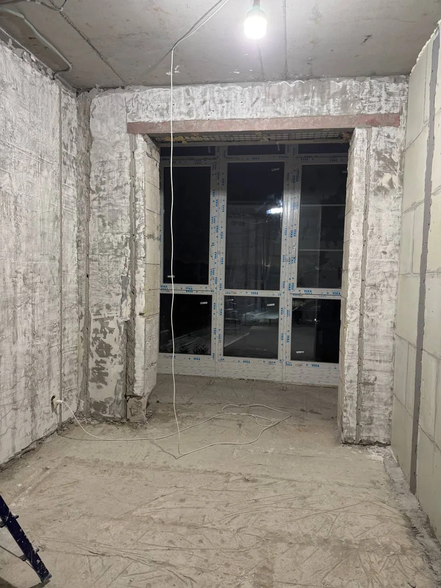
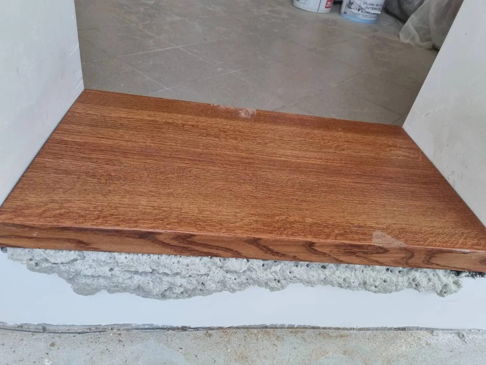
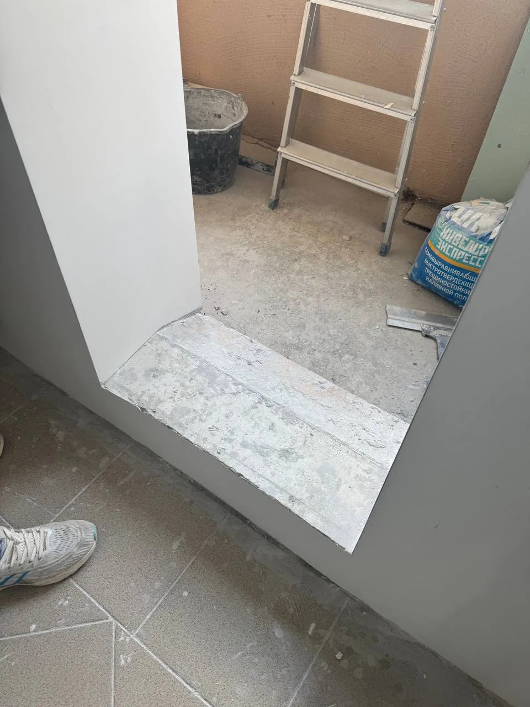
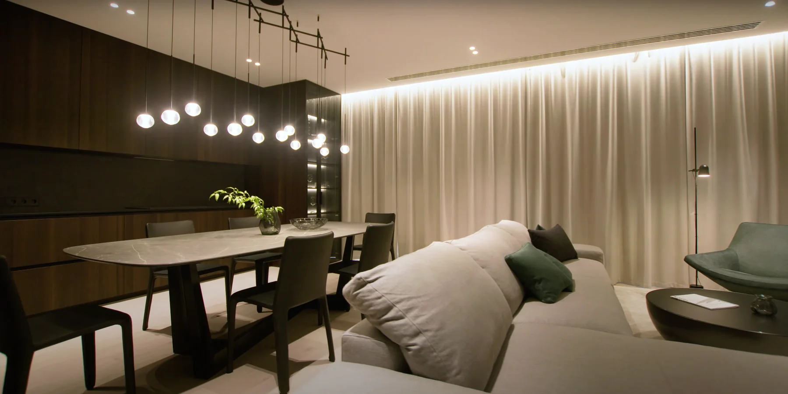
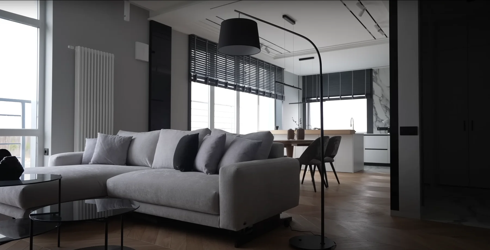
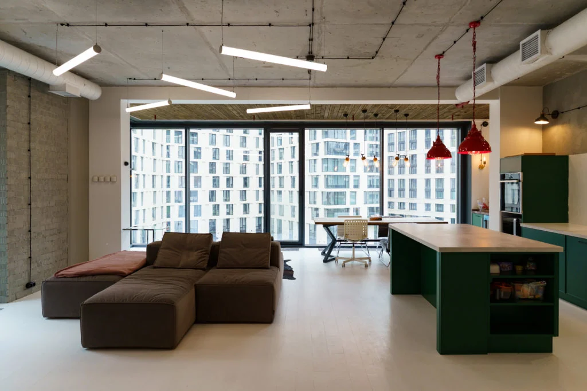

До отделкиПосле отделкиКомната с панорамным окном
Сравните оконный проём до и после отделки. Стены окрасили, уложили светлое напольное покрытие и установили плинтус.
Сравните, как менялись квартиры, и откройте фотографии, чтобы рассмотреть отделку в деталях.

До отделкиПосле отделкиСравните оконный проём до и после отделки. Стены окрасили, уложили светлое напольное покрытие и установили плинтус.

 До облицовкиПосле облицовки
До облицовкиПосле облицовкиПосле монтажа труб облицевали стены плиткой под мрамор. Нишу оставили доступной для обслуживания.


До монтажаПосле монтажаНа подготовленное основание в дверном проёме установили деревянный порог. Фотографии сделаны с разных сторон проёма.

После ремонтаКухня-гостиная. Мягкое освещение по периметру объединяет обеденную зону и место для отдыха.

После ремонтаГостиная в готовой квартире.

После ремонтаКухня-гостиная после завершения ремонта.
Покажите план квартиры или расскажите, что хотите изменить.
Подскажем, с чего начать, и договоримся о замере.